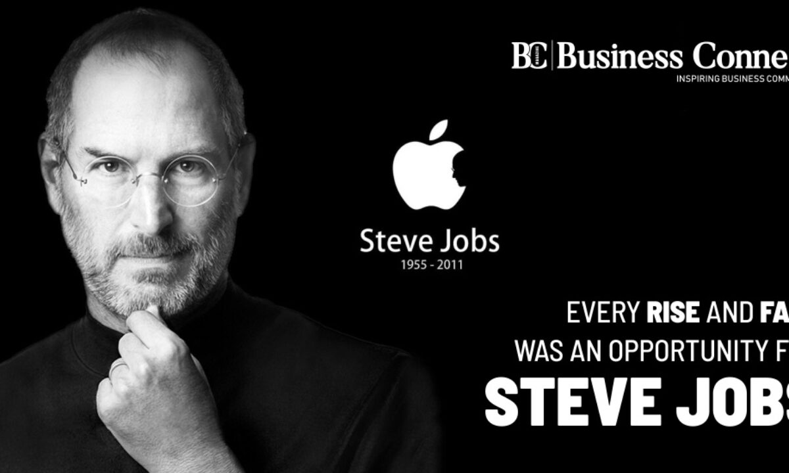

Steve Jobs
The man who loved innovation

Steve Jobs in his 20's with early version of Macintosh
Here's time-line of Steve Jobs Life :
- 1955 - Steve Jobs was born on February 24, 1955, in San Francisco, to parents Joanne Simpson and Abdulfattah Jandali. He was later adopted by Paul and Clara Jobs with whom he moved to Mountain View, California.As a child, Jobs was interested in engineering and electronics and took apart various items to see how they worked. He later attended Homestead High School in Cupertino, California.
- 1972 - In the early part of 1970, Jobs meets the future Apple co-founder, Steve Wozniak, through a mutual friend and the two get along quite well despite their four-year age difference.In 1972, Jobs enrolled at Reed College in Portland, Oregon. However, he dropped out after one semester as he felt that he was not getting anything out of it. Although, Steve Jobs did continue auditing calligraphy classes at Reed College which kept him interested.
- 1974 - Steve Jobs then returned to California and began a brief stint as a technician at Atari, a video game manufacturer. While here, Jobs gets in touch with Wozniak and enlists his help in deciding on the hardware required for the prototype for a single-player game called Pong, which would later be known as Breakout.In the summer of 1974, Jobs traveled to India with a friend to visit ashrams and experience Buddhism. Upon his return to the US, he began attending meetings of the Homebrew Computer Club with Steve Wozniak.
- 1976 - Wozniak had designed and built his own computer-cum-logic board which he called the Apple I. With Jobs help, they founded Apple Computer (now Apple Inc.) in 1976 and released their first product, the Apple I, later that year.Apples third founder, Ronald Wayne, served as the groups adult supervisor, drawing up the Apple logo, the partnership agreement, and the manual for Apple I. Afraid of the financial risks, Ronald Wayne gave up his shares for a sum of $2,300 but the Apple I went on to sell for $666.66 a piece by the end of the year.
- 1984 - In 1984, Apple launched the Macintosh which featured a GUI that was based on Xeroxs Star system. The Macintosh was unsuccessful initially but went on to become one of the most popular personal computers of all time.Steve Jobs himself unveiled and introduced the Macintosh during the SuperBowl XVIII through the now famous $1.5 Million TV commercial directed by Ridley Scott and known today as a masterpiece of marketing.
- 1985 - The conception of the Macintosh made Jobs uncompromising nature quite evident, from the design creation to its eventual launch. The resulting disagreements kept festering within the company and concerned Apple employees finally resulting in an open power struggle between Steve Jobs and Apple CEO John Sculley.While the board of directors wanted Sculley to contain Steve and let not his ventures result in expensive forays, Steve jobs instead planned to oust Sculley from his position. When Sculley caught wind of this scheme, he colluded with the stakeholders and finally succeeded in removing Jobs from his managerial position.Jobs then resigned from Apple and sold all but one Apple stock. Steve Wozniak also followed suit by de facto resigning from his high position and getting back to the Apple product development team to be more involved in the making than simply reigning.
- 1988 - In late 1988, NeXT released its first NeXT computer with a tag of $6,500 a piece. It was received as largely cost-prohibitive due to its advanced workstation, but those who could afford it became its staunch supporters.Steve Jobs managed to market the NeXT products to scientific and academic sponsors due to the innovative technologies incorporated in its production like the built-in Ethernet Port, Mach Kernel, and the digital signal processor chip.After a while, Jobs’ shifted his focus from developing whole computers to largely dealing with software at NeXT.Meanwhile, in 1991, IBM Corp. and Apple ally to develop advanced software and new PC microprocessors. Apple’s PowerBook gets launched, establishing the standard norm for future laptop computers.1993 saw the introduction of Apple’s pen-based computer, Newton. And although it was a huge financial disappointment when launched, it nevertheless paved the way for Apple’s products like the iPhone and iPad in the future.A string of financial failures saw Apple changing hands from CEO John Sculley to president Michael Spindler. Then in 1994, Apple introduces the Power Macintosh Computers and decides to license its OS, thereby allowing its competitors to clone the Mac.In 1995, the first Mac goes live; Microsoft releases its Windows 95 version; and Apple’s financial and existential struggle continues burdened with fierce competition, mistakes concerning customer demand, and component shortages.Contrastingly, Pixar’s Toy Story hits the theaters with an IPO raising $140 million.
- 1996 - The administration of Apple changes hands again, from Michael Spindler to Gil Amelio on February 2, 1996. After a thorough briefing on the admin management, Amelio learned that even prolonged efforts could not develop or produce an alternate for the aging Macintosh OS. Instead, he chose to purchase NeXT for $430 Million for the NeXTstep OS that Jobs’ and his team had developed.This decision resulted in Jobs returning to Apple’s management while also laying the base for NeXT technology to become the foundation of the Mac OS X operating system.
- 1997 - When the board of directors at Apple were dissatisfied with Amelio’s capabilities to make Apple financially stable, they turned to Steve Jobs for help. As the interim CEO of Apple, Steve Jobs first scrapped the contracts of cloning the Mac technology and announced Apple’s partnership with Microsoft.
- 2005 - Here, Steve Jobs announces the shift from using IBM’s processing chips to Intel Processors for their further innovations. Eventually, 2006 saw the introduction of the first Intel-based devices, the iMac and MacBook Pro with Intel Core Duo processors.
- 2011 - In January of 2011, Steve Jobs took a second medical leave of absence with no particular duration raising more speculations about his failing health. While he was still involved in major decision-making processes, Tim Cook was given the heads up to run day-to-day operations.In August of 2011 Jobs finally resigns from his position as CEO of Apple, naturally replaced by COO Tim Cook. On October 5, 2011, Apple co-founder and former CEO Steve Jobs passed away at the age of 56 after a long battle with pancreatic cancer. His death was widely mourned with many tributes pouring in from around the world.
I was lucky to get into computers when it was a very young and idealistic industry. There weren't many degrees offered in computer science,so people in computers were brilliant people from mathematics,physics,music,zoology,whatever. They loved it,and no one was really in it for the money.....There are people around here who start companies just to make money,but the great companies,well,that's not what they're about.
-Steve Jobs
You can learn more about this incredible man on Wikipedia.